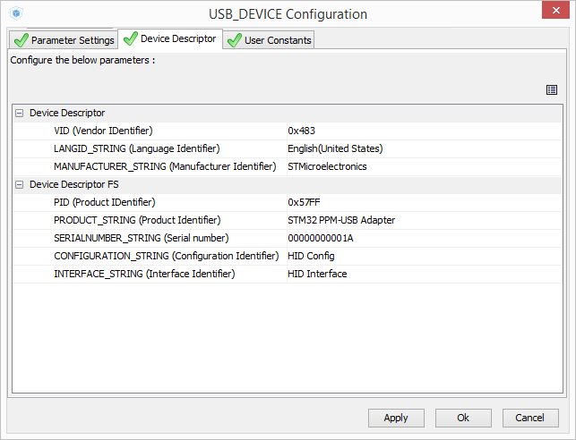
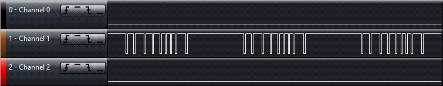
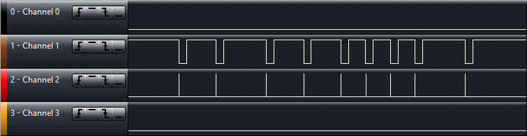

7 октября 2015 в 23:32
PPM-to-USB адаптер на STM32F3Discovery, или Подключаем авиамодельный пульт к компьютеру как HID-джойстик с STM32Cube
В этой статье я расскажу, как:
- Создать проект в STM32CubeMX и настроить таймеры для захвата внешних сигналов.
- Декодировать PPM-сигнал с авиамодельного пульта.
- Сделать Human Interface Device на STM32 и написать свой HID Report Descriptor.
- Полетать в симуляторе на гоночном квадрокоптере. :)
Предисловие
В последнее время всё большую популярность набирают FPV-гонки на квадрокоптерах 250-го класса (FPV – First Person View). Число 250 означает расстояние между осями моторов по диагонали, типичное для маленьких манёвренных коптеров. Такие аппараты строят на прочных карбоновых рамах, выдерживающих падения и столкновения. На мощные моторы ставят пропеллеры диаметром 5-6 дюймов с большим шагом (углом наклона лопастей) для максимально динамичного полёта. Изображение с аналоговой курсовой видеокамеры передаётся на частоте 5.8ГГц на монитор или видео-очки пилота. Поскольку цифровая передача через WiFi создаёт большую задержку (200-300 мс), видео всегда транслируется по аналоговому каналу. Для записи эффектных роликов на борт ставят action-камеры (GoPro, Mobius, SJcam, Xiaomi Yi и др.).
Вот несколько захватывающих видео про FPV-коптеры:
Перед тем, как строить свой мини-квадрокоптер, мне хотелось полетать в симуляторе и понять, будут ли мне интересны FPV-гонки. Для тренировок хорошо подходит симулятор FPV FreeRider. Он недорогой, имеет бесплатную демо-версию и, по словам опытных пилотов, весьма точно имитирует реальную механику полёта.
Управлять летательным аппаратом в симуляторе можно с клавиатуры или с джойстика. Клавиатура плохо подходит для пилотирования, так как кнопками можно передать лишь дискретное значение (кнопка нажата/не нажата) и нельзя передать плавно изменяющиеся промежуточные значения. Джойстики от игровых консолей с аналоговыми стиками подходят намного лучше, однако у них весьма маленький ход стика, что не позволяет управлять аппаратом достаточно точно. Идеальный вариант для симулятора – это авиамодельный пульт, подключенный к компьютеру через специальный переходник, благодаря которому операционная система видит его как джойстик.
У меня уже был один квадрокоптер, собранный для неспешных полётов и фотосъёмки, но слишком большой и тяжёлый для гонок. Соответственно, был и пульт – Turnigy 9X (на первой иллюстрации). На задней стороне у него есть разъём для подключения адаптера, на который выводится сигнал PPM. Этот сигнал представляет собой короткие импульсы с интервалами от 1 до 2 миллисекунд, длительности которых соответствуют положению органов управления (подробнее о нём в разделе про декодирование).
Надо сказать, что переходники для подключения пульта с PPM к USB уже давно выпускаются и вовсю продаются. Подобный переходник в форм-факторе флешки можно купить за 5 долларов в Китае или немного дороже в российских магазинах. Существуют и open-source проекты адаптеров на контроллерах AVR.
Но острое желание немедленно полетать пришло ко мне поздно вечером, когда все московские авиамодельные магазины были уже закрыты. Ждать утра не хотелось, травить и паять плату с ATmega было некогда, поэтому я решил сделать адаптер PPM-USB на плате STM32F3Discovery, которая давно лежала без дела и как раз оказалась под рукой.
Что потребуется
Для того, чтобы сделать переходник, понадобятся:
- Плата STM32F3Discovery. Подойдёт любая плата с STM32, у которого есть аппаратный USB, разведённый на плате.
- Двухжильный провод c мини-джеком 3,5 мм с одной стороны (для Turnigy) и двумя BLS-разъёмами, надеваемыми на штыри, с другой (для Discovery).
- Генератор кода STM32CubeMX.
- IDE с компилятором для ARM. Я использую Keil uVision 5. Бесплатная демонстрационная версия поддерживает проекты с исполняемым кодом до 32 кБ, этого хватит для нашей несложной задачи.
- Пульт Turnigy 9X или любой другой с PPM-выходом. Проект был также успешно протестирован с FlySky FS-i6.
Отладочные платы Discovery весьма дорогие. Описываемая F3 стоит около $20 и её возможности избыточны для такого простого проекта. Я использовал её, потому что на момент написания статьи это была единственная плата с аппаратным USB, что нашлась у меня дома. Тем, кто ещё не покупал её, могу посоветовать обратить внимание на миниатюрные платы с контроллером STM32F103C8T6 с AliExpress за $3 и программатор ST-Link оттуда же. Процесс работы не отличается от описанного в статье. Разве что надо будет выбрать в начале другой контроллер, указать наличие кварцевого резонатора и использовать чуть другую распиновку.
Создание проекта в STM32CubeMX
STM32Cube – это комплекс, разработанный STMicroelectronics для того, чтобы облегчить жизнь разработчикам устройств на STM32. Он состоит из графической утилиты CubeMX, HAL-драйверов и Middleware-компонентов.
CubeMX – инструмент для создания проектов и инициализации периферии. Чтобы начать работу, достаточно выбрать контроллер, расставить галочки напротив нужных модулей, выбрать в меню требуемые режимы и в нескольких полях ввести желаемые значения. CubeMX сам сгенерирует проект и подключит к нему необходимые библиотеки. Разработчику устройства останется только написать логику работы приложения.
HAL-драйверы (Hardware Abstraction Layer) представляют собой API для работы с модулями и периферией микроконтроллера. HAL позволяет отделить верхний слой приложения, которое создаёт разработчик, от работы с регистрами и сделать код программы максимально переносимым между семействами контроллеров STM32.
Middlewares, или промежуточные компоненты, включают операционную систему FreeRTOS, библиотеку для работы с файловой системой, библиотеки USB, TCP/IP и т.д.
Казалось бы, теперь можно «программировать мышкой» вместо того, чтобы вручную записывать биты в регистры. Но простота и удобство не отменяют того, что нужно изучать документацию, особенно в случаях, когда надо выжать максимум быстродействия, минимум энергопотребления или использовать периферию в нестандартных режимах. STM32Cube пока ещё не покрывает на 100% всех возможностей микроконтроллера, но приближается к этому. STMicroelectronics время от времени обновляют Cube, расширяют функции и исправляют ошибки. Поэтому, если у вас уже установлен Cube, проверьте, чтоб он был последней версии.
Начальные настройки
Работа с проектом начинается с выбора контроллера. Запускаем STM32CubeMX, нажимаем New Project. На вкладке MCU Selector можно по фильтрам подобрать желаемый контроллер. Так как у нас готовая отладочная плата, то на вкладке Board Selector, находим STM32F3Discovery. После выбора платы появится изображение контроллера с подсвеченными и подписанными пинами.
В верхней части окна четыре больших вкладки:
Pinout – для настройки функций пинов и предварительной настройки модулей. На ней мы находимся в данный момент.
Clock Configuration – настройка тактирования, PLL, делителей.
Configuration – более детальная настройка периферии и middleware.
Power Consumption Calculator – расчёт потребляемой микроконтроллером мощности.
В левом меню на вкладке Pinout можно задействовать нужную периферию, а на схеме контроллера выбрать функцию для любого из выводов микроконтроллера. Напротив некоторых пунктов слева стоят значки предупреждений. Это значит, что модули (в данном случае ADC, DAC, OPAMP2, RTC) сейчас можно использовать не полностью, так некоторые их выводы уже заняты другими функциями.
Зелёным на схеме контроллера подсвечены настроенные пины. Поскольку мы выбрали не голый контроллер без обвязки, а готовую отладочную плату F3-Discovery, то некоторые выводы уже сконфигурированы, например, к PA0 подключена синяя кнопка, а к PE8...15 – светодиоды. Оранжевым выделены те пины, к которым на Discovery подключены какие-то внешние устройства, но периферийные модули для них ещё не настроены. Как видим, это пины для USB, кварцевых резонаторов, SPI и I2C для гироскопа и компаса, DP и DM для USB. Серые выводы в данный момент не используются, любые из них мы можем применить для своих целей.
Выбор входа
Мы собираемся захватывать длительности импульсов, значит вход должен быть подключен к одному из каналов любого таймера. Кроме того, уровень сигнала с Turnigy 9X не 3,3В, как напряжение питания STM32, а 5В. Паять делитель напряжения нам лень, поэтому надо выбрать вход, который выдержит 5В (такие входы называют 5V-tolerant). Подходящие пины можно посмотреть в datasheet на STM32F303VCT6 в разделе Pinouts and Pin Description. Таймеров в STM32F3 много, они разбросаны почти по всем пинам. Удобный вариант – PC6. Он выдерживает 5 Вольт и находится в левом нижнем углу платы, рядом с GND. Назначим на этот пин 1-й канал 3-го таймера TIM3_CH1.

Настройка тактирования
Для работы USB микроконтроллер должен тактироваться от очень стабильной частоты, именно поэтому почти во всех USB-устройствах установлены кварцевые резонаторы. Стабильности частоты встроенного RC-генератора недостаточно для USB. Но на плате STM32F3 Discovery разработчики по какой-то причине пожадничали и не поставили кварц. Однако, если внимательно изучить схему, то можно увидеть, что на вход PF0-OSC_IN, куда должен подключаться кварц, подведён сигнал MCO. Он поступает от программатора ST-Link на этой же плате, в котором кварц есть. В User Manual для F3 Discovery (UM1570) в разделе OSC Clock сказано, что на эту линию подаются 8 МГц.
Таким образом, микроконтроллер тактируется от внешнего источника. Этот режим называется Bypass. В меню настройки периферии в разделе RCC для тактирования High Speed Clock выберем BYPASS Clock Source.
Перед тем, как приступить к более детальной настройке тактирования, отметим в меню периферии, что микроконтроллер будет выступать в роли USB-устройства.
Теперь можно перейти к следующей большой вкладке – Clock Configuration. Здесь мы увидим огромную схему, на которой показано, какие тактовые сигналы присутствуют в микроконтроллере, откуда они берутся, как они ветвятся, умножаются и делятся. Жёлтым цветом я выделил те параметры, на которые следует обратить внимание.
Проверим, что входная частота Input Frequency равна 8 МГц.
Переключатель PLL Source Mux ставим в положение HSE (High Speed External), чтоб тактироваться от внешнего, а не внутреннего источника.
PLL – Phase Lock Loop, или ФАПЧ – фазовая автоподстройка частоты, служит для умножения внешней частоты в несколько раз. Множитель PLLMul настроим на 9. Тогда мы достигнем максимальной возможной частоты для STM32F303 – 72 МГц.
System Clock Mux должен находиться в положении PLLCLK, чтобы для тактирования контроллера использовалась умноженная частота с PLL.
Для модуля USB нужно 48 МГц, поэтому поставим делитель 1,5 перед USB.
Обратим внимание на частоту APB1 timer clocks в левой части схемы. Она подаётся на таймеры и пригодится нам в дальнейшем.
Если какая-то частота настроена некорректно, превышает максимально возможное значение или переключатели находятся в недопустимом положении, то CubeMX выделит это место красным.
Настройка таймера
Для измерения длительности импульсов мы запустим таймер TIM3 в режиме захвата Input Capture. В Reference Manual в разделе General-purpose timers (TIM2/TIM3/TIM4) есть схема иллюстрирующая работу таймеров. Цветами я выделил сигналы и регистры, используемые в режиме Input Capture.
Сигнал тактирования, выделенный зелёным, непрерывно приходит в регистр счётчика CNT и увеличивает его значение на 1 каждый такт. В делителе Prescaler PSC частота тактового сигнала может уменьшаться для более медленного отсчёта.
На вход TIMx_CH1 приходит внешний сигнал. Edge Detector распознаёт фронты входного сигнала – переходы из 0 в 1 или из 1 в 0. При регистрации фронта он подаёт две команды, выделенные жёлтым:
– команда для записи значения счётчика CNT в регистр Capture/compare 1 register (CCR1) и вызов прерывания CC1I.
– команда для Slave mode controller, по которой значение CNT сбрасывается в 0 и отсчёт начинается сначала.
Вот иллюстрация процесса на временной диаграмме:
При возниконовении прерывания мы будем совершать действия с захваченным значением. Если входные импульсы приходят слишком часто, а действия, происходящие в обработчике прерывания, слишком долгие, то значение CCR1 может перезаписаться до того, как мы прочитали предыдущее. В этом случае нужно проверять флаг перезаписи (Overcapture) или же применять DMA (Direct Memory Access), когда данные из CCR1 автоматически заполняют заранее подготовленный массив в памяти. В нашем случае самый короткий импульс имеет длительность 1 миллисекунду, а обработчик прерывания будет простым и коротким, поэтому беспокоиться о перезаписи не стоит.
Вернёмся на вкладку Pinout и настроим таймер TIM3 в меню Peripherals.
Slave Mode: Reset Mode – означает, что при некотором событии таймер будет сбрасываться на 0.
Trigger Source: TI1FP1 – событие, используемое для сброса и запуска таймера – это фронт сигнала, захваченный со входа TI1.
ClockSource: Internal Clock – таймер тактируется от внутреннего генератора микроконтроллера.
Channel 1: Input Capture direct mode – захват интервалов с 1-го канала в регистр CCR1.
На следующей большой вкладке Configuration сделаем дополнительные настройки таймера.
Prescaler – делитель таймера. Если он равен 0, частота берётся напрямую с шины тактирования APB clock – 72 МГц. Если prescaler равен 1 – частота делится на 2 и становится равной 36 МГц. Установим делитель на 71, чтобы частота делилась на 72. Тогда частота таймера будет равна 1 МГц и интервалы будут измеряться с разрешением в 1 микросекунду.
Counter Period – установим максимально возможное 16-битное значение 0xFFFF. Период важен для генерации временных интервалов, например, для ШИМ. Но для захвата сигналов период не важен, сделаем его заведомо большим любых входных импульсов.
Polarity Selection: Falling Edge – значения таймера будут захватываться по заднему фронту сигнала на входе.
На вкладке NVIC Settings поставим галку TIM3 global interrupt, чтобы при событиях, связанных с 3-м таймером генерировалось прерывание.
Настройка USB-device
Мы уже отметили, что контроллер будет USB-устройством. Так как джойстик относится к классу HID-устройств, то в меню Middlewares -> USB_DEVICE выберем Class For FS IP: Human Interface Device Class (HID). Тогда CubeMX подключит к проекту библиотеки для HID-устройства.
Зайдём в настройки USB_DEVICE на вкладке Configuration в разделе Middlewares:

Vendor ID и Product ID – это два 16-битных идентификатора, уникальных для каждой модели USB-устройств. VID соответствует производителю устройства, а PID каждый производитель присваивает, руководствуясь своими соображениями. Официальный список VID и PID мне найти не удалось, я отыскал лишь базу идентификаторов, поддерживаемую энтузиастами. Чтобы заиметь собственный Vendor ID, нужно обратиться к USB Implementers Forum на usb.org и заплатить несколько тысяч долларов. Небольшие компании или open-source разработчики, которым не по карману свой VID, могут обратиться с запросом к производителю USB-микросхем и официально получить для своего проекту пару VID/PID. Такую услугу предлагают, например, FTDI или Silicon Laboratories.
Если подключить к компьютеру два устройства с одинаковыми VID/PID, но разного типа (например, одно – HID-устройство, а другое – Mass Storage), то операционная система попытается установить для них один и тот же драйвер, и как минимум одно из них работать не будет. Именно поэтому пары VID/PID для разных моделей устройств должны быть уникальными.
Поскольку устройство мы делаем для себя, продавать и распространять его не собираемся, то оставим VID 0x0483, соответствующий STMicroelectronics, а PID придумаем свой. По умолчанию CubeMX предлагает PID 0х5710 для HID-устройства. Заменим его, например, на 0x57FF.
Строку Product string заменим на STM32 PPM-USB Adapter. Это название будет отображаться в списке устройств в панели управления Windows. Серийный номер (S\N) пока менять не будем.
Когда Windows обнаруживает обнаруживает устройство с комбинацией VID, PID и S\N, которая раньше ей не встречалась, система устанавливает для него соответствующий драйвер. Если же комбинация VID, PID и S\N уже использовалась, то Windows автоматически подставляет ранее использованный драйвер. Вы можете это увидеть, например, когда подключаете Flash-накопитель к USB. Первый раз подключение и установка занимает некоторое время. При последующих подключениях накопитель начинает работу почти мгновенно. Однако, если подключить другой экземпляр Flash-накопителя той же модели, но с другим серийным номером, то система будет ставить для него новый драйвер, даже несмотря на то, что VID и PID у него те же самые.
Поясню, почему это важно. Если Вы создали на STM32 USB-мышь со своими VID, PID и S\N, подключили её к компьютеру, а затем сделали USB-джойстик, не изменив VID, PID и S\N, то Windows воспримет новое устройство как мышь, которая уже использовалась в системе, и не будет устанавливать драйвер джойстика. Соответственно, джойстик работать не будет. Поэтому, если хотите изменить тип своего устройства, оставив VID/PID без изменений, то обязательно меняйте его серийный номер.
Генерирование проекта для IDE
Последние настройки, которые нужно сделать – это настройки генерирования проекта. Это делается через Project -> Settings… Там мы зададим имя, папку назначения и желаемую IDE, под которую CubeMX создаст проект. Я выбрал MDK-ARM V5, так как пользуюсь Keil uVision 5. На вкладке Code Generator можно поставить галку Copy only the necessary library files, чтобы не загромождать проект лишними файлами.
Нажимаем кнопку Project -> Generate code. CubeMX создаст проект с кодом, который можно открыть в Keil uVision и без дополнительных настроек скомпилировать и прошить. В файле main.c в функции main(void) уже вставлены функции для инициализации тактирования, портов, таймера и USB. В них модули микроконтроллера настраиваются в соответствии с теми режимами, которые мы задали в CubeMX.
В коде часто встречаются конструкции такого вида:
/* USER CODE BEGIN 0 */
(...)
/* USER CODE END 0 */
Предполагается, что пользователь будет вставлять свой код в эти секции. Если в настройках проекта CubeMX включена опция Keep User Code when re-generating, то при вторичном генерировании уже существующего проекта код, заключённый между этими строками, перезаписываться не будет. К сожалению, сохраняются только секции, созданные CubeMX. Секции /* USER CODE */, созданные пользователем, будут утеряны. Поэтому, если вы после написания кода в IDE хотите вернуться в CubeMX и сгенерировать проект заново с новыми настройками, рекомендую сделать резервную копию проекта.
В настройках прошивки в uVision (Flash -> Configure Flash Tools) советую включить опцию Reset after flash, чтобы микроконтроллер стартовал сразу после перепрошивки. По умолчанию она отключена, и после каждой перепрошивки приходится нажимать кнопку Reset на плате.
Декодирование PPM-сигнала
PPM – Pulse Position Modulation – метод кодирования передаваемых сигналов, очень широко распространённый в авиамодельной электронике. Он представляет собой последовательности импульсов, временные интервалы между которыми соответствуют передаваемым числовым значениям.
По этому протоколу пульт посылает информацию передающему радио-модулю, который вставляется в пульт сзади. Многие приёмники, которые ставятся на борт коптера, могут передавать сигналы управления для полётного контроллера посредством PPM. Кроме того, почти в любом пульте есть разъёмы для подключения второго пульта в режиме тренер-ученик и для подключения пульта к симулятору, в которых тоже, как правило, используется PPM.
Запишем логическим анализатором сигнал с симуляторного выхода Turnigy 9X:

Каждая последовательность кодирует текущее состояние органов управления на пульте. Обычно первые четыре значения (их ещё называют каналами) соответствуют положению аналоговых стиков, а последующие – положению тумблеров или потенциометров.
Минимальному положению органа управления соответствует интервал 1000 мкс, максимальному – 2000 мкс, среднему положению – 1500 мкс. Пачки импульсов, или кадры, разделяются существенно бОльшими интервалами и следуют с периодом 20–25 мс.
Рассмотрим сигнал поближе:
Как видим, три стика стоят в нейтральном положении (1, 3, 4), а один находится в крайнем положении (2). Три тумблера выключены (5, 6, 7), а последний включен (8). Микроконтроллер, выступающий в роли адаптера, должен захватить такую последовательность, сложить значения в массив и послать его по USB как команду с джойстика. Напишем декодер последовательности импульсов.
Прерывание по захвату
После инициализации в main.c перед основным циклом while запустим таймер TIM3 в режиме захвата Input Capture с 1-го канала, с генерацией прерываний по захвату. Для этого используем соответствующую функцию из HAL:
HAL_TIM_IC_Start_IT(&htim3, TIM_CHANNEL_1);
Структура htim3, объявленная в main.c – это handler таймера TIM3, который содержит в себе все структуры и переменные, связанные с таймером: параметры для инициализации, указатели на все регистры таймера (значение счётчика, делителя, все настройки, флаги прерываний), указатель на handler DMA, который работает с этим таймером и т.д. Разработчику не требуется искать, какие биты в каком регистре за что отвечают и вручную их устанавливать и сбрасывать. Достаточно передать handler в функцию HAL. Всё остальное HAL-библиотеки сделают сами.
Про принципы строения HAL более подробно рассказывается в документе Description of STM32F3xx HAL drivers (UM1786). Надо отметить, что сами библиотеки HAL хорошо документированы. Чтобы разобраться, как работает HAL для таймером и как им пользоваться, можно почитать комментарии в файлах stm32f3xx_hal_tim.h и stm32f3xx_hal_tim.c.
При каждом прерывании, которое генерирует таймер TIM3, вызывается обработчик TIM3_IRQHandler. Он находится в файле stm32f3xx_it.c, в нём в свою очередь вызывается стандартный для всех таймеров обработчик HAL_TIM_IRQHandler, и в него передаётся указатель на структуру htim3.
void TIM3_IRQHandler(void)
{
/* USER CODE BEGIN TIM3_IRQn 0 */
/* USER CODE END TIM3_IRQn 0 */
HAL_TIM_IRQHandler(&htim3);
/* USER CODE BEGIN TIM3_IRQn 1 */
/* USER CODE END TIM3_IRQn 1 */
}
Если мы заглянем внутрь HAL_TIM_IRQHandler в файле stm32f3xx_hal_tim.c, то увидим огромный обработчик, который проверяет флаги прерываний для таймера, вызывает callback-функции и очищает флаги после выполнения. Если случилось событие захвата, то он вызывает функцию HAL_TIM_IC_CaptureCallback. Она выглядит так:
__weak void HAL_TIM_IC_CaptureCallback(TIM_HandleTypeDef *htim)
{
/* NOTE : This function Should not be modified, when the callback is needed, the __HAL_TIM_IC_CaptureCallback could be implemented in the user file
*/
}
Это означает, что мы можем переопределить эту функцию в main.c. Поэтому вставим перед функцией int main(void) этот callback:
void HAL_TIM_IC_CaptureCallback(TIM_HandleTypeDef *htim)
{
};
Хотелось бы посмотреть, как выполняется прерывание. Добавим в него быстрое включение-выключение одного из выводов:
void HAL_TIM_IC_CaptureCallback(TIM_HandleTypeDef *htim)
{
HAL_GPIO_WritePin(GPIOE, GPIO_PIN_8, GPIO_PIN_SET);
__nop();__nop();__nop();__nop();__nop();__nop();
HAL_GPIO_WritePin(GPIOE, GPIO_PIN_8, GPIO_PIN_RESET);
};
Вывод PE8 уже был инициализирован как выход. Между включением и выключением вставлены инструкции __nop(), что формирует задержку на 1 такт. Это сделано, чтобы мой китайский логический анализатор за $8, работающий на частоте 24 МГц не пропустил слишком короткий импульс от микроконтроллера, работающего на 72 МГц. Теперь скомпилируем проект Project -> Build target и прошьём контроллер Flash -> Download. Подключим PPM от пульта к PC6, и посмотрим анализатором, что происходит на PC6 и PE8.

Callback действительно вызывается в нужные моменты – сразу после того, как произошёл переход входного сигнала из 1 в 0. Значит, всё было сделано правильно.
Сбор и обработка захваченных данных
Отредактируем callback, чтобы каждое захваченное значение он складывал в буфер captured_value без изменений. Если таймер захватил очень большое значение (больше 5000 мкс), это значит, что была зафиксирована пауза, пакет принят целиком и его можно обрабатывать. Обработанные значения складываются в массив rc_data из 5 элементов. В первые четыре складываются положения стиков, приведённые к диапазону [0; 1000], в пятом выставляются отдельные биты в соответствии с тумблерами, которые будут интерпретироваться как нажатия кнопок на геймпаде.
uint16_t captured_value[8] = {0};
uint16_t rc_data[5] = {0};
uint8_t pointer = 0;
uint8_t data_ready = 0;
...
void HAL_TIM_IC_CaptureCallback(TIM_HandleTypeDef *htim)
{
uint8_t i;
uint16_t temp;
// считываем значение из регистра захвата
temp = HAL_TIM_ReadCapturedValue(htim, TIM_CHANNEL_1);
// если интервал слишком длинный, значит, пакет принят
if ((temp > 5000) && (!data_ready))
{
pointer = 0;
// приводим четыре значения со стиков к диапазону [0;1000]
for (i = 0; i < 4; i++)
{
if (captured_value[i] < 1000)
captured_value[i] = 1000;
else if (captured_value[i] > 2000)
captured_value[i] = 2000;
rc_data[i] = captured_value[i]-1000;
};
// записываем положения тумблеров как биты
rc_data[4] = 0;
if (captured_value[4] > 1500)
rc_data[4] |= (1<<4);
if (captured_value[5] > 1500)
rc_data[4] |= (1<<5);
if (captured_value[6] > 1500)
rc_data[4] |= (1<<6);
if (captured_value[7] > 1500)
rc_data[4] |= (1<<7);
data_ready = 1;
}
else // сохраняем одно принятое значение в буфер
{
captured_value[pointer] = temp;
pointer++;
};
if (pointer == 8) // защита от переполнения
pointer = 0;
}
Поясню, почему я разместил биты, соответствующие кнопкам, не в младшие 4 бита, а в биты с пятого по восьмой. В симуляторе предполагается подключать геймпад от Xbox, где используются кнопки LB, RB, Start и Back, а они имеют номера с 5 по 8.
В главном цикле будет непрерывно крутиться проверка флага data_ready, по которому данные будут отправляться на компьютер.
while (1)
{
if (data_ready)
{
// здесь будет отправка данных на ПК
data_ready = 0;
}
}
Чтобы проверить, как это работает, подключим пульт, снова скомпилируем и прошьём, а потом запустим отладку Debug -> Start/Stop Debug Session.
Откроем окно для отслеживания переменных View -> Watch Windows -> Watch 1 и добавим туда captured_value и rc_data.
Запустим отладку командой Debug -> Run и в режиме реального времени, даже не добавляя точек останова, увидим, как вслед за движениями стиков меняются числа.
Дальше нужно отправить данные на компьютер в виде команды джойстика.
Настройка HID-устройства и создание HID Report Descriptor
USB HID (Human Interface Device) – это класс устройств для взаимодействия человека с компьютером. К ним относятся клавиатуры, мыши, джойстики, геймпады, сенсорные панели. Главное преимущество HID-устройств в том, что для них не требуется специальных драйверов в любых операционных системах: Windows, OS X, Android и даже iOS (через USB-Lightning adapter). Подробное описание можно прочитать в документе Device Class Definition for HID. Главное, что нам необходимо знать для создания PPM-USB-адаптера – что такое HID Report и HID Report Descriptor.
HID-устройство посылает на компьютер пакеты байт в заранее установленном формате. Каждый такой пакет – это HID Report. О формате данных устройство сообщает компьютеру при подключении, отправляя HID Report Descriptor – описание пакета, в котором указывается, сколько байт содержит пакет и назначение каждого байта и бита в пакете. Например, HID Report простой мыши состоит из четырёх байт: в первом байте содержится информацию о нажатых кнопках, во втором и третьем байте – относительное перемещение курсора по X и Y, а четвёртый байт – вращение колеса прокрутки. Report Descriptor хранится в памяти контроллера устройства в виде массива байтов.
Перед тем, как создавать дескриптор, я хотел бы отдельно остановиться на терминологии. В англоязычной среде распространены два термина – joystick и gamepad. Словом joystick принято называть манипулятор, который держат одной рукой и наклоняют в разные стороны, а gamepad – устройство с кнопками и стиками, которое держат двумя руками. Русскоязычные пользователи обычно называют джойстиком и то, и другое. В описании HID-устройства между джойстиком и геймпадом есть разница. Авиамодельный пульт больше похож по своему функциональному назначению на геймпад, поэтому в дальнейшем я иногда буду использовать термин «геймпад».
Мы сгенерировали проект, указав, что устройство будет выступать как Human Interface Device. Это значит, что к проекту подключена библиотека USB HID и уже был сформирован Device Descriptor. Он находится в файле usbd_hid.c, описывает репорт мыши и выглядит так:
HID_Mouse_Report_Descriptor
__ALIGN_BEGIN static uint8_t HID_MOUSE_ReportDesc[HID_MOUSE_REPORT_DESC_SIZE] __ALIGN_END =
{
0x05, 0x01,
0x09, 0x02,
0xA1, 0x01,
0x09, 0x01,
0xA1, 0x00,
0x05, 0x09,
0x19, 0x01,
0x29, 0x03,
0x15, 0x00,
0x25, 0x01,
0x95, 0x03,
0x75, 0x01,
0x81, 0x02,
0x95, 0x01,
0x75, 0x05,
0x81, 0x01,
0x05, 0x01,
0x09, 0x30,
0x09, 0x31,
0x09, 0x38,
0x15, 0x81,
0x25, 0x7F,
0x75, 0x08,
0x95, 0x03,
0x81, 0x06,
0xC0, 0x09,
0x3c, 0x05,
0xff, 0x09,
0x01, 0x15,
0x00, 0x25,
0x01, 0x75,
0x01, 0x95,
0x02, 0xb1,
0x22, 0x75,
0x06, 0x95,
0x01, 0xb1,
0x01, 0xc0
};
Создавать HID Report Descriptor вручную – занятие чрезвычайно трудоёмкое. Для облегчения задачи есть инструмент под названием HID Descriptor Tool (DT). Этой программой можно составить дескриптор для своего устройства. В архиве с ним можно найти несколько примеров дескрипторов для разных устройств.
Здесь очень хорошая статья про создание своего HID-дескриптора для мыши и клавиатуры (на английском). Я расскажу на русском, как сделать дескриптор для геймпада.
HID-Report, отправляемый пультом должен содержать четыре 16-битных значения для двух осей аналоговых стиков и 16 однобитных значений для кнопок. Итого 10 байт. Его дескриптор, созданный в DT, будет выглядеть так:
0x05, 0x01, // USAGE_PAGE (Generic Desktop)
0x09, 0x05, // USAGE (Game Pad)
0xa1, 0x01, // COLLECTION (Application)
0x09, 0x01, // USAGE (Pointer)
0xa1, 0x00, // COLLECTION (Physical)
0x09, 0x30, // USAGE (X)
0x09, 0x31, // USAGE (Y)
0x15, 0x00, // LOGICAL_MINIMUM (0)
0x26, 0xe8, 0x03, // LOGICAL_MAXIMUM (1000)
0x75, 0x10, // REPORT_SIZE (16)
0x95, 0x02, // REPORT_COUNT (2)
0x81, 0x02, // INPUT (Data,Var,Abs)
0xc0, // END_COLLECTION
0xa1, 0x00, // COLLECTION (Physical)
0x09, 0x33, // USAGE (Rx)
0x09, 0x34, // USAGE (Ry)
0x15, 0x00, // LOGICAL_MINIMUM (0)
0x26, 0xe8, 0x03, // LOGICAL_MAXIMUM (1000)
0x75, 0x10, // REPORT_SIZE (16)
0x95, 0x02, // REPORT_COUNT (2)
0x81, 0x02, // INPUT (Data,Var,Abs)
0xc0, // END_COLLECTION
0x05, 0x09, // USAGE_PAGE (Button)
0x19, 0x01, // USAGE_MINIMUM (Button 1)
0x29, 0x10, // USAGE_MAXIMUM (Button 16)
0x15, 0x00, // LOGICAL_MINIMUM (0)
0x25, 0x01, // LOGICAL_MAXIMUM (1)
0x75, 0x01, // REPORT_SIZE (1)
0x95, 0x10, // REPORT_COUNT (16)
0x81, 0x02, // INPUT (Data,Var,Abs)
0xc0 // END_COLLECTION
Выглядит не менее устрашающе, чем дескриптор мыши. Но если разобраться, что означает каждая строка, всё оказывается вполне понятным и логичным.
USAGE показывает, как система должна интерпретировать данные, которые идут дальше.
Разновидностей Usage бывает очень много, они рассортированы по группам – Usage Pages. Поэтому для того, чтобы выбрать какой-то определённый Usage, надо сначала обратиться к соответствующей USAGE_PAGE. Про то, какие бывают Usage можно прочитать в документе Hid Usage Tables. В самом начале дескриптора мы указываем, что будет описываться джойстик:
USAGE_PAGE (Generic Desktop)
USAGE (Game Pad)
COLLECTION объединяет в себе несколько связанных друг с другом наборов данных.
Physical Collection используются для данных, относящихся к одной конкретной геометрической точке, например, одному аналоговому стику. Application Collection используется для объединения разных функций в одном устройстве. Например, клавиатура со встроенным трекпадом может иметь две Application Collection. Мы описываем только джойстик, значит, коллекция будет одна:
COLLECTION (Application)
…
END_COLLECTION
После этого нужно указать, что будут описываться элементы, передающие координаты. Usage Pointer применяется при описании мыши, джойстиков, геймпадов, дигитайзеров:
USAGE (Pointer)
Дальше следуют описания аналоговых стиков, объединённых в коллекции:
COLLECTION (Physical)
USAGE (X)END_COLLECTION
USAGE (Y)
LOGICAL_MINIMUM (0)
LOGICAL_MAXIMUM (1000)
REPORT_SIZE (16)
REPORT_COUNT (2)
INPUT (Data,Var,Abs)
USAGE здесь указывает, что используются значения отклонения по двум осям – X и Y.
LOGICAL_MINIMUM и LOGICAL_MAXIMUM задают, в каких пределах может меняться передаваемое значение.
REPORT_COUNT и REPORT_SIZE задают, соответственно, сколько чисел и какого размера мы собираемся передать, а именно два 16-битных числа.
INPUT(Data,Var,Abs) означает, что данные поступают от устройства к компьютеру, причём данные эти могут изменяться. Значения в нашем случае абсолютные. От мыши, например, приходят относительные значения для перемещения курсора. Иногда данные описываются как Const, а не Var. Это нужно, чтоб передать не значащие биты. Например, в репорте мыши с тремя кнопками передаются 3 бита Var для кнопок и 5 бит Const, чтобы дополнить размер передачи до одного байта.
Как видим, описания осей X и Y сгруппированы вместе. У них одинаковый размер, одинаковые пределы. Тот же самый аналоговый стик можно было бы описать следующим образом, описывая каждую ось по отдельности. Работать такой дескриптор будет аналогично предыдущему:
COLLECTION (Physical)
USAGE (X)
LOGICAL_MINIMUM (0)
LOGICAL_MAXIMUM (1000)
REPORT_SIZE (16)
REPORT_COUNT (1)
INPUT (Data,Var,Abs)USAGE (Y)END_COLLECTION
LOGICAL_MINIMUM (0)
LOGICAL_MAXIMUM (1000)
REPORT_SIZE (16)
REPORT_COUNT (1)
INPUT (Data,Var,Abs)
После первого стика описывается второй аналоговый стик. Его оси имеют другой Usage, чтобы можно было отличить их от первого стика – Rx и Ry:
COLLECTION (Physical)
USAGE (Rx)END_COLLECTION
USAGE (Ry)
LOGICAL_MINIMUM (0)
LOGICAL_MAXIMUM (1000)
REPORT_SIZE (16)
REPORT_COUNT (2)
INPUT (Data,Var,Abs)
Теперь нужно описать несколько кнопок геймпада. Это можно сделать следующим образом:
USAGE_PAGE (Button)
USAGE(Button 1)
USAGE(Button 2)
USAGE(Button 3)
…
USAGE(Button 16)
Громоздкую запись однотипных кнопок можно сократить, использовав диапазон Usage:
USAGE_PAGE (Button)
USAGE_MINIMUM (Button 1)
USAGE_MAXIMUM (Button 16)
Данные, передаваемые кнопками представляют собой 16 однобитовых значений, изменяющихся от 0 до 1:
LOGICAL_MINIMUM (0)
LOGICAL_MAXIMUM (1)
REPORT_SIZE (1)
REPORT_COUNT (16)
INPUT (Data,Var,Abs)
Порядок строк в дескрипторе не строгий. Например, Logical_Minimum и Logical_Maximum можно написать перед Usage(Button), или строки Report_Size и Report_Count можно поменять местами.
Важно, чтобы перед командой Input располагались все нужные параметры для передачи данных (Usage, Mimimum, Maximum, Size, Count).
Когда дескриптор сформирован, его можно проверить командой Parse Descriptor на наличие ошибок.
Если всё в порядке, то экспортируем его с расширением h. В файле usbd_hid.c заменим дескриптор на новый и скорректируем в usbd_hid.h размер дескриптора HID_MOUSE_REPORT_DESC_SIZE с 74 на 61.
Отчёты отправляются по флагу data_ready. Для этого к main.c подключим заголовочный файл usbd_hid.h и в главном цикле вызовем функцию отправки отчёта. Массив rc_data имеет тип uint16, поэтому указатель на него надо привести к 8-битному типу и передать размер 10 вместо 5.
#include "usbd_hid.h"
...
while (1)
{
if (data_ready)
{
USBD_HID_SendReport(&hUsbDeviceFS, (uint8_t*)rc_data, 10);
data_ready = 0;
};
};
Компилируем проект и прошиваем ещё раз.
Подключение и использование
Переподключим кабель USB из разъёма USB ST-LINK в разъём USER USB. Windows обнаружит новое устройство и автоматически установит драйвер. Зайдём в Панель управления -> Устройства и принтеры и увидим наше устройство STM32 USB-PPM Adapter со значком геймпада.
В параметрах устройства можно увидеть, как крестик перемещается по полю и столбики шевелятся вслед за перемещением стиков, а обозначения кнопок загораются от переключения тумблеров. Проводить калибровку не обязательно, потому что минимальные и максимальные значения уже были заданы в дескрипторе.
Запустив FPV FreeRider, мы увидим, как на главном экране на нарисованном виртуальном геймпаде стики двигаются в соответствии с нашим пультом. Если оси по какой-то причине назначены неправильно, их можно перенастроить в разделе Calibrate Controller.
Тумблеры, соответствующие кнопкам на пульте, служат для переключения полётных режимов (акробатический/стабилизированный), переключения вида камеры (с борта/с земли), запуска полёта с начала или включения гонки на время.
Полетели!
На видео – результат нескольких дней моих тренировок. Пока я летаю с автовыравниванием горизонта, а не в акробатическом режиме, как делают все мастера FPV-гонок. В акро-режиме, если отпустить стики, коптер не возвращается в горизонтальное положение автоматически, а продолжает лететь под тем же углом, как и летел. Управлять в акро-режиме значительно сложнее, но зато можно достичь большей скорости, манёвренности, делать перевороты в воздухе и даже летать вверх-ногами.
До мастеров уровня Charpu мне пока ещё очень далеко, но я продолжаю тренировки и могу сказать точно, что идея гоночного мини-коптера меня заинтересовала ещё больше. И в скором времени я обязательно займусь его постройкой и полётами уже не в симуляторе, а в суровой реальности, с настоящими падениями, поломанными пропеллерами, разбитыми моторами и сгоревшими аккумуляторами. Но это уже тема для других статей :)
Проект для Keil uVision 5 и STM32CubeMX лежит на GitHub.
Самое читаемое
-
Физика в мире животных: омар и его глаза 11,4k 16 14
-
Краткая история слова «дрон» 7,7k 17 12
-
Четыре всадника Инфокалипсиса 14,1k 36 44
Комментарии (5) отслеживать новые: